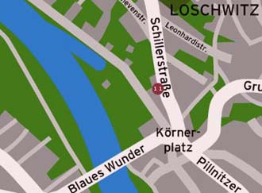

Das ZAZA befindet sich in einem ehemaligen Weinberg am
Elbhang
, direkt am Blauen Wunder. Über den Körnerweg oder die Schillerstraße gelangen Sie zu unserem Café.
CAFE
AKTUELL
LAGE
QUARTIER
IMPRESSUM